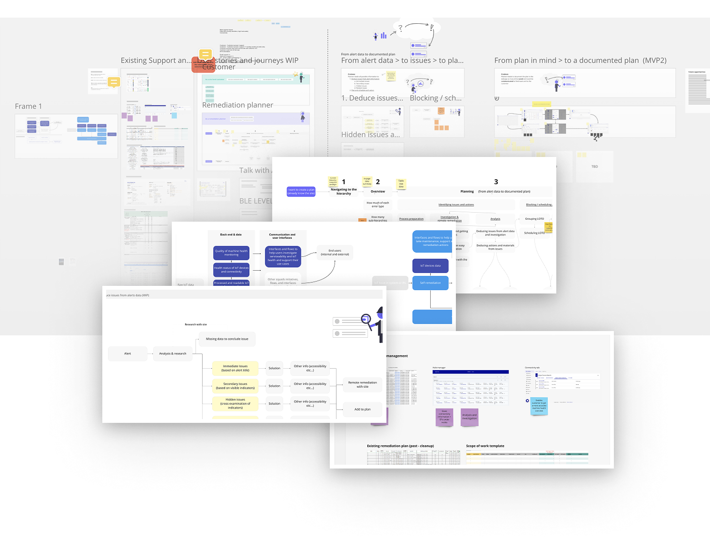
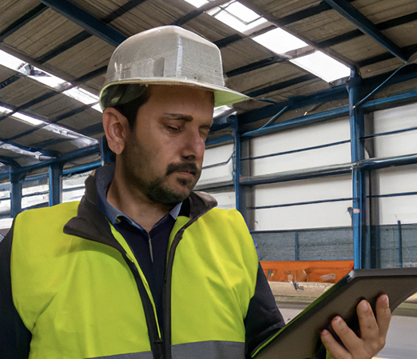
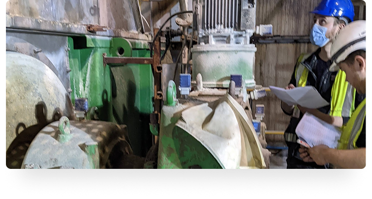
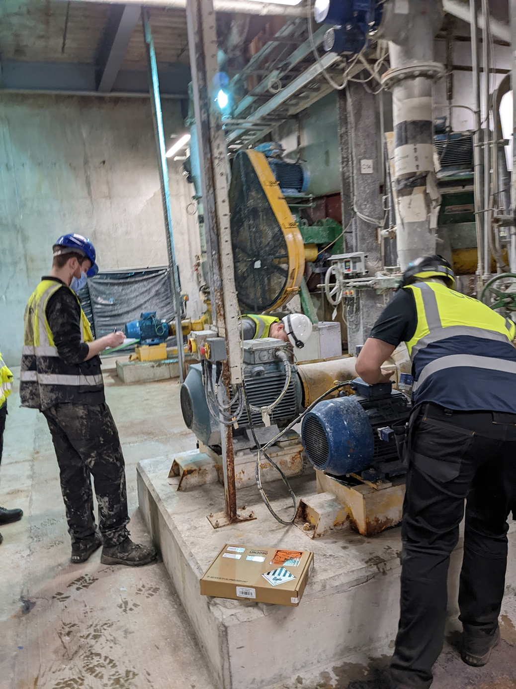
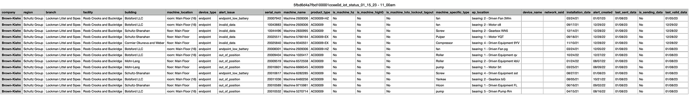
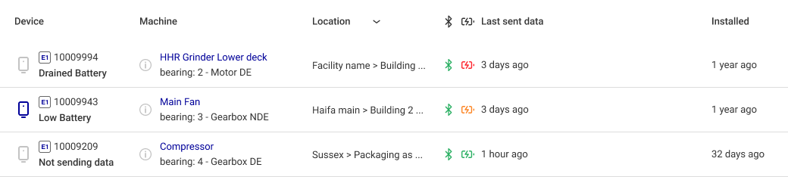
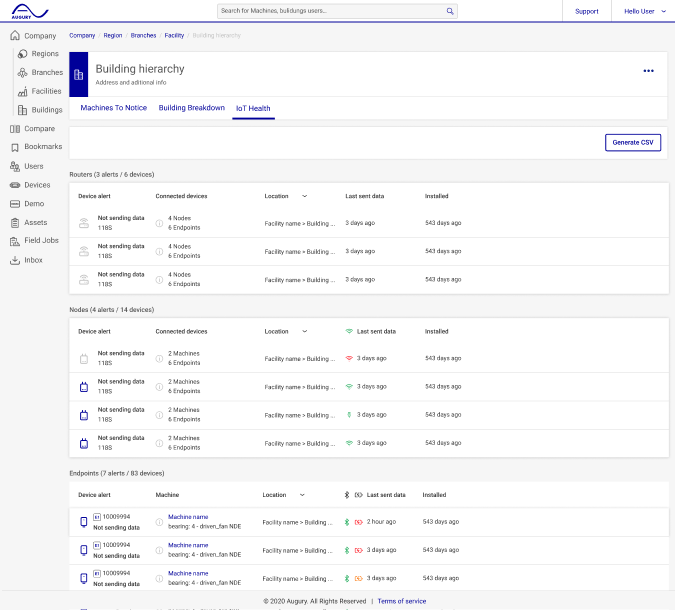
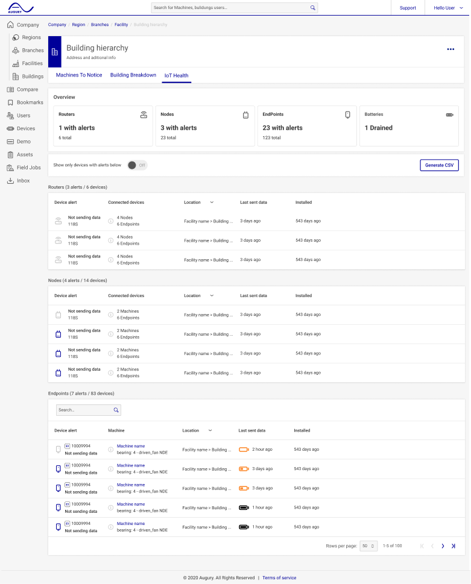
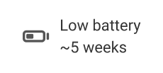
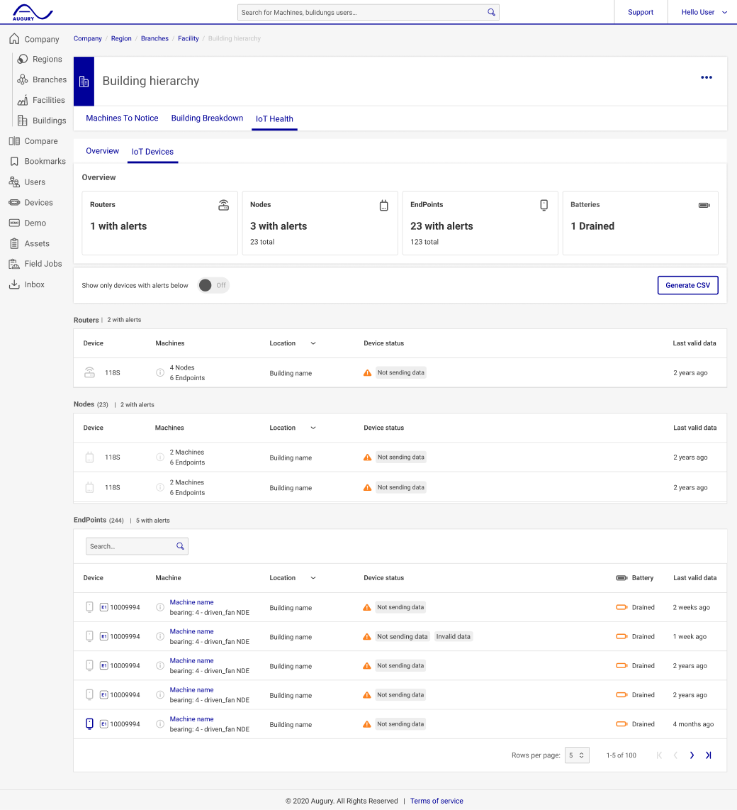

What is Augury?
Monitoring machine health status using sensors and AI
Augury is using IoT technology and AI to monitor and display machine health status.
Dec 2021 – August 2022 · Tom Bar-Gal Arbiv
Augury is using IoT technology and AI to monitor and display machine health status.
Users were not sure which IoT devices should be fixed and how
This was due to low visibility into the IoT status and information
Goal
Success metric
Goal
Success metric
Frequency of calls for support
Goal
Improve customer satisfaction
Success metric
CSAT and NPS
Give our users visibility into the health of their IoT infrastructure

Main persona

Main jobs · IoT context
Because they are not operating properly
Understand the root cause for each device


Solution
Start
Log in to Augury and go to the desired facility.
1
2
3
4
5
6
Hover over “Not sending data”.
Outside system
Next device
Design Process
To allow users to only fix devices that require fixing, in Phase 1 we only showed faulty devices.
To allow users to estimate the root cause of the device malfunction, we’ve only selected helpful information to display at the top level.
Based on interviews, users’ conceptual model of IoT data consumption was an understanding that the data represents a device’s current status.
The system’s data model was based on Alerts / Snapshots. The design of the UI was meant to bridge that gap.


To maintain the existing IA model, we’ve added the IoT Health view as an additional view of any selected hierarchy entity:
That allows users to stumble into it organically without needing to remember to check it whenever they are in the system.
Separating device types by impact on monitoring - main connectivity devices first, then secondary, then local sensors.

Feedback from users and usability testing:
To allow users to get an overview of their inventory, we’ve added the ability to see not just devices with alerts, but all their devices
To allow users to get a sense of the scale of their IoT issues and how much work they need to plan for, we’ve added an overview with a summary of IoT issues.
This summary also enables users to know how many batteries they need to order.
Icons previously had two issues:
To reduce loading times of facilities with hundreds of devices, we’ve added pagination. Because users sometimes had to find a single device on a paginated list, we’ve added a “search” function.

Customers complained that they replace batteries too often.
To increase the time between battery replacements, we’ve considered providing an estimation of how much time is left for the battery to function.
That way, if there are planned shutdowns of the machines, they are able to replace them closer to their time of depletion.

Feedback from users and usability testing:
Usability improvements
Adding additional alerts required us to rethink the alert structure.
Users cared most about two things:
So we’ve divided the alerts into two types of alerts:
Displaying Operational Alerts as chips allows us to frame the area that will react to mouse hover events.
For each Operational Alert there are common actions to take in order to resolve that alert. For the MVP, we’ve decided to show all alerts, because creating a single playbook for all alert combinations would have taken a long time.
To help users focus on devices that are faulty and require maintenance (in opposition to devices that are not functional due to a parent device), we’ve added an ⚠️ icon to focus their attention on those devices.
To promote visual balance we’ve separated the columns so that there is one flexible column in the middle. This allowed the “last valid data” column to be consistently on the right and balance the visual layout inside the table.

Feedback from users and usability testing:
Users felt empowered that they had a place to assess the status of their IoT infrastructure.
Contributing factors to success:
Users were confused due to differences between data in the IoT Health tab and other sources in the system.
Contributing factors to this issue:
It's crucial to identify and comprehend the presence of similar data or entities throughout the system and evaluate the effects of product changes on the users.
It's crucial to research the monitored technology thoroughly to plan and account for the range of possible scenarios.
There should be a subtle balance between the display of raw and manipulated data.